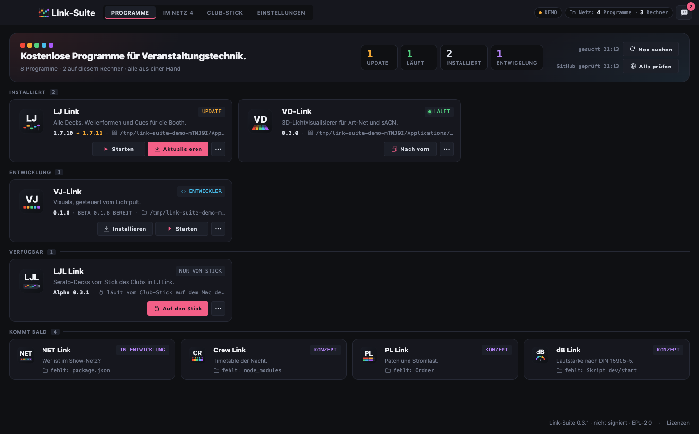
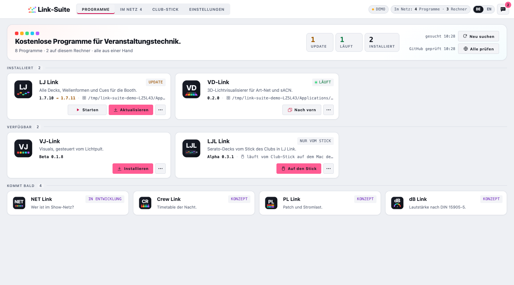
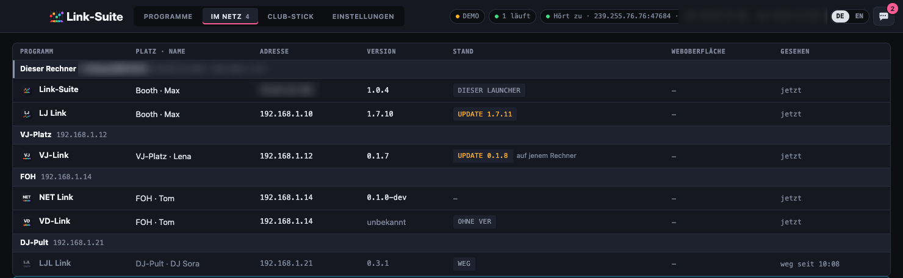

LJ Link
verfügbarmacOS · Windows
Zeigt dem Lichtjockey Decks, Waveforms und Cues von unterstützten Pioneer- und Denon-Geräten und schickt das Tempo an grandMA, Daslight und mehr.
Installieren, aktualisieren, starten – und auf einen Blick sehen, wer im Show-Netz was laufen hat. Link-Suite hält alle Programme für Licht, Video, Sound und die Crew zusammen. Mit einem Klick, geprüft und kostenlos.

Link-Suite im Demo-Modus mit Beispieldaten.
So einfach geht's
Einmal herunterladen, für Mac oder Windows. Ohne Anmeldung, ohne Konto.
Auf der Karte Installieren klicken. Link-Suite holt die neueste Version direkt aus GitHub und prüft jede Datei.
Starten, aktualisieren, das Netz im Blick, mit dem Team chatten. Neue Versionen meldet Link-Suite von selbst.
Funktionen
Ein Fenster für alle Programme der Link-Suite – gebaut für die Booth, den FOH und die Nacht davor.
Oben die Zahlen, auf die es ankommt: Updates, laufende und installierte Programme. Darunter jedes Programm als Karte, sortiert nach installiert, verfügbar und kommt bald. Ein Klick auf eine Karte zeigt Version, Herkunft und was neu ist.

LJ Link, VJ-Link und VD-Link installiert und aktualisiert Link-Suite direkt aus ihren GitHub-Releases. Jede Datei wird geprüft, bevor sie auf deine Platte kommt – und ein laufendes Programm wird nie einfach ersetzt.
IM NETZ zeigt jedes Suite-Programm im Show-Netz: auf welchem Rechner, an welchem Platz, wer es bedient und in welcher Version. Ein Update für einen anderen Rechner? Link-Suite sagt es dir – und fasst fremde Rechner nie an.

Ein Chatraum für alle Suite-Programme im Netz: LJ Link in der Booth, VJ-Link am VJ-Platz, Link-Suite am FOH. Kein Server, kein Konto, sofort da. Und wenn es drauf ankommt, holt der gelbe EMERGENCY-Knopf alle nach vorn.
EMERGENCY ist ein Hinweis fürs Team und ersetzt keine Alarm- oder Sicherheitsanlage.

Sprache, Tag oder Nacht, Startanimation, Name und Platz im Chat: Was du in Link-Suite einstellst, übernehmen alle Suite-Programme. Deutsch oder Englisch wechselst du jederzeit oben im Fenster mit DE | EN.

Link-Suite holt seine eigenen Updates genauso geprüft. Ein Klick auf „Jetzt neu starten“, und die neue Version läuft – auf dem Mac und unter Windows, ohne Admin-Abfrage.
„Auf den Stick“ legt LJL Link direkt auf den USB-Stick des Clubs oder in einen Ordner – mit kurzer Anleitung für den Gast-DJ.
Die Programm-Icons fliegen in ihre Karten. Kurz, mit Klick überspringbar, ruhig bei „Bewegung reduzieren“.
Fenster ohne Titelleiste, Tastenkürzel, Fortschritt und Update-Zahl am Dock-Symbol, stille Mitteilungen und ein Symbol in der Menüleiste.
Der Installer installiert nur für deinen Benutzer – auf Deutsch oder Englisch, ohne Admin-Abfrage.
Für alle, die an der Suite mitbauen: Projekte aus dem eigenen Ordner starten, mit Log-Leiste und Stoppen. Erscheint nur, wenn du sie brauchst.
Die Link-Suite
Kostenlose Programme für Clubs, Festivals und Bühnen. Sie hören zu, zeigen und helfen – und sie sprechen im Show-Netz miteinander. Link-Suite hält sie zusammen.
Jetzt verfügbar
Zeigt dem Lichtjockey Decks, Waveforms und Cues von unterstützten Pioneer- und Denon-Geräten und schickt das Tempo an grandMA, Daslight und mehr.
Live-Visuals, gesteuert vom Lichtpult, auf Bildschirmen, LED-Wänden und Beamern – im Takt der Musik aus LJ Link.
3D-Lichtvisualisierer für Art-Net und sACN: Dein Lichtpult steuert einen virtuellen Club oder ein Festival, und du siehst die Show, bevor sie hängt.
Bringt die Serato-Decks vom Mac des DJs in LJ Link in der Booth – direkt vom USB-Stick des Clubs, ohne Installation.
Der Timetable der Nacht: wer wann spielt, Countdown bis Set-Ende und Sperrstunde – eine Uhr für alle, auch aufs Handy.
Bald in der Suite
Wer ist im Show-Netz? Findet IP-Konflikte, falsche Subnetze und fehlendes Multicast – und sagt, was zu ändern ist.
Patch und Stromlast: DMX-Adressen, Stromkreise, Kabel- und Packlisten – geplant, bevor das Rig hängt.
Lautstärke messen, angelehnt an DIN 15905-5: vor dem Grenzwert warnen und am Ende der Nacht das Protokoll schreiben.
Neue Programme kommen mit dem nächsten Update von Link-Suite direkt in dein Fenster.
Sicherheit & Privatsphäre
Für jedes Programm der Link-Suite gelten dieselben Regeln – auch für Link-Suite selbst.
Link-Suite steuert kein Gerät und kein Programm im Netz. Andere Rechner werden gezeigt, nie angefasst.
Keine Nutzungsdaten, keine Absturzberichte, kein Tracking. Auch diese Website kommt ohne Tracker und ohne Cookies aus.
Der Suite-Chat läuft direkt zwischen den Programmen im lokalen Netz. Keine Anmeldung, nirgends.
Ins Internet geht Link-Suite nur, um GitHub nach neuen Versionen zu fragen und das zu laden, was du auswählst.
Installiert, aktualisiert und gestartet wird nur, wenn du es willst.
Link-Suite sendet ins lokale Netz, solange der Suite-Chat an ist (ab Werk an, abschaltbar in den Einstellungen), und fragt GitHub nach Releases.
| Daten | Wer sie bekommt |
|---|---|
| „Ich bin da“ alle 5 Sekunden: Programmname, Version, dein Name und Platz im Chat (wenn gesetzt), eine Zufallskennung | jedes Suite-Programm im lokalen Netz (Multicast 239.255.76.76:47676) |
| Chat-Nachrichten und EMERGENCY, die du sendest | jedes Suite-Programm im lokalen Netz |
| Antwort auf die Netzprüfung von NET Link: je Netzwerkadapter dessen IPv4-Adresse | adressiert an das NET Link, das gefragt hat; geht per Multicast an jedes Suite-Programm im lokalen Netz |
| „Tschüss“ beim Beenden | jedes Suite-Programm im lokalen Netz |
| Die Frage nach den neuesten Releases der Suite-Programme und die Downloads, die du startest | GitHub (api.github.com, github.com und die Download-Server von GitHub). Wie jede Website sieht GitHub deine IP-Adresse. Kein Name und keine Liste deiner Programme wird gesendet. |
| Deine installierten Programme, deine Ordner, das Log von Entwicklerprojekten | niemand – bleibt auf diesem Rechner |
| Nutzungsdaten, Absturzberichte, Telemetrie | gibt es nicht |
Der Chat ist bewusst einfach gehalten und unverschlüsselt: Jeder im selben Netzwerk kann mitlesen, und die Programme im Raum geben die letzten Nachrichten an Neue weiter. Schreib dort nichts Vertrauliches. Ein Entwicklerprojekt, das du startest, ist ein eigenes Programm – was es tut, legt das Projekt fest.
Die Prüfungen schützen vor kaputten und vertauschten Downloads. Link-Suite und die Suite-Programme sind ohne Apple- oder Microsoft-Zertifikat veröffentlicht; die Prüfung übernimmt Link-Suite selbst.
Download
Einmal laden – den Rest holt Link-Suite. Kostenlos, Open Source, ohne Anmeldung.
Link-Suite ist ein freies Projekt und erscheint ohne Apple- oder Microsoft-Zertifikat. Beim ersten Start fragt dein System deshalb einmal nach – so geht's weiter. Lade Link-Suite nur von dieser Seite oder von GitHub.
Tipp: Fragt macOS nach einem Update noch einmal nach dem lokalen Netzwerk, einfach wieder erlauben.
Fragen
Nichts. Link-Suite und alle Programme der Suite sind kostenlos und Open Source (EPL-2.0) – ohne Abo, ohne Konto, ohne Werbung.
Nein, jedes Programm läuft auch allein, und die Einzel-Downloads bleiben in den GitHub-Releases. Link-Suite macht Installieren, Aktualisieren und den Überblick einfach bequem.
Ja. Starten, IM NETZ und der Suite-Chat laufen komplett im lokalen Netz. Internet braucht Link-Suite nur zum Installieren und Aktualisieren.
Unter Einstellungen → Über zeigt Link-Suite neue Versionen an, lädt sie, prüft sie und setzt sie mit „Jetzt neu starten“ ein – auf dem Mac und unter Windows.
Ja. Oben im Fenster wechselst du mit DE | EN jederzeit die Sprache – und alle Suite-Programme ziehen mit.
Ja, dafür gibt es eine eigene Version für Macs mit Intel-Prozessor ab macOS 13.
Ein auffälliger Hinweis an alle Suite-Programme im Netz, wenn das Team sofort Bescheid wissen muss. EMERGENCY ersetzt keine Durchsagen, Funkgeräte oder das Sicherheitskonzept der Veranstaltung.
Im Discord der Link-Suite oder per Mail an fehlermelden@nextphilm.de.